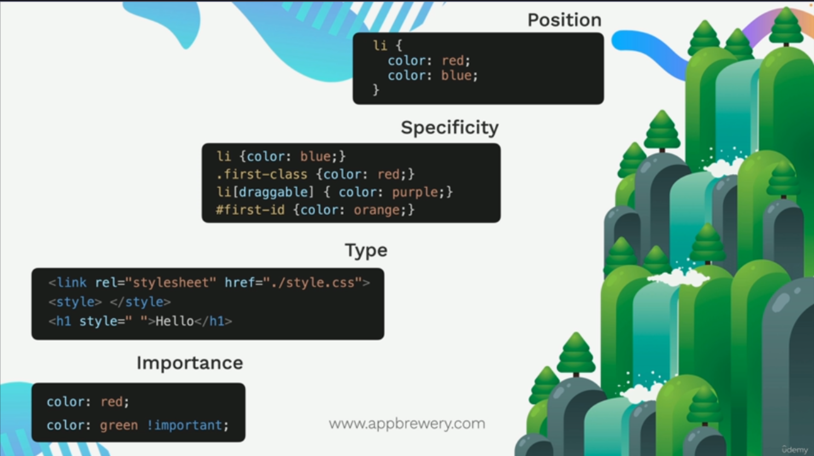

Cascading Inheritance & Specificity
In this project, we will explore the concepts of Cascading Inheritance and Specificity.
Cascading Inheritance
Cascading Inheritance is a fundamental concept in which certain CSS properties are passed down from parent elements to their child elements. This means that if you set a property on a parent element, the child elements will also inherit that property unless they have their own specific styles defined.
CSS Specificity
CSS specificity is a set of rules that determine which CSS rule will be applied to an element when there are multiple conflicting rules. The specificity of a CSS rule is calculated based on the types of selectors used in the rule. The more specific a selector is, the higher its specificity, and it will take precedence over less specific selectors.
For example, an ID selector has a higher specificity than a class selector, and a class selector has a higher specificity than an element selector. If there are conflicting styles, the rule with the highest specificity will be applied to the element.
Types of Selectors
There are several types of CSS selectors, each with their own level of specificity:
-
Element selectors
Element selectors target HTML elements directly.Element selectors have the lowest specificity.
-
Class selectors
Class selectors target elements with a specific class attribute.Class selectors have a higher specificity than element selectors.
-
ID selectors
ID selectors target elements with a specific ID attribute.ID selectors have the highest specificity.
Rules of Specificity
When multiple CSS rules apply to the same element, the rule with the highest specificity will be applied. If two rules have the same specificity, the one that appears last in the CSS will take precedence.
The broad categories are:
-
Position
In this case what matters is the order in which the styles are defined. The example code is given below:
So in the above example, the color will be red because it appears last..my-class { color: blue; color: red; } -
Specificity
It follows a precedence -> Element selectors have the lowest specificity, followed by class selectors, attribute selectors, and then ID selectors(highest).
- Element selectors
h1 { color: green; } - Class selectors
.my-class { color: blue; } - Attribute selectors
li[draggable] { color: orange; } - ID selectors
#my-id { color: red; }
- Element selectors
-
Type
The CSS follows a specific order of precedence. First, External stylesheets, then Internal stylesheets, and finally Inline styles. Given below is an example:
<link rel="stylesheet" href="styles.css"><style></style><h1 style="color: blue;">Inline style</h1>
-
Importance
The !important declaration can override other rules regardless of specificity. Example:
.my-class { color: blue; color: red !important; }
In conclusion, you should consider all four factors when determining which CSS rules apply to an element.
Check the image below: Position (low) to Importance (high)

Disclaimer: I own the copyright for the image. It belongs to its respective owner.